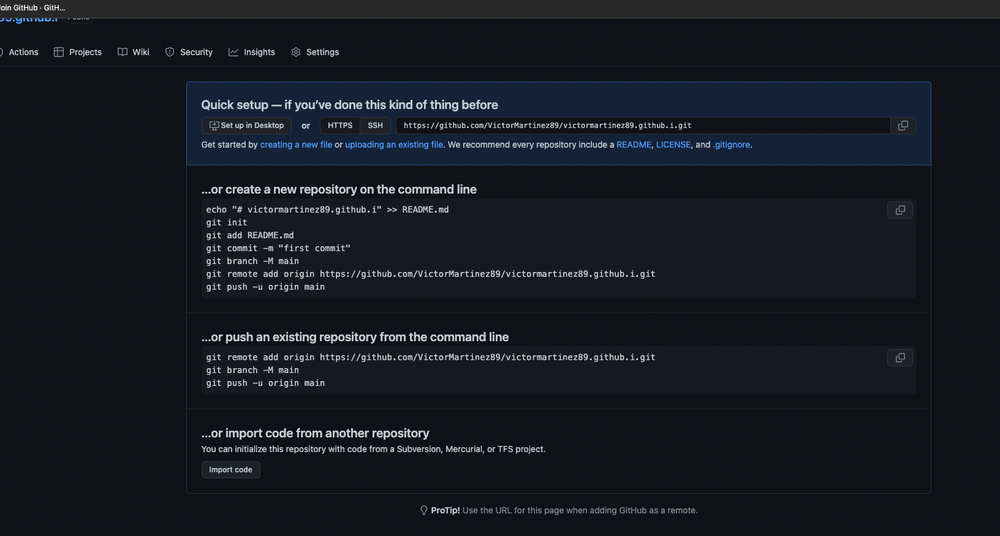
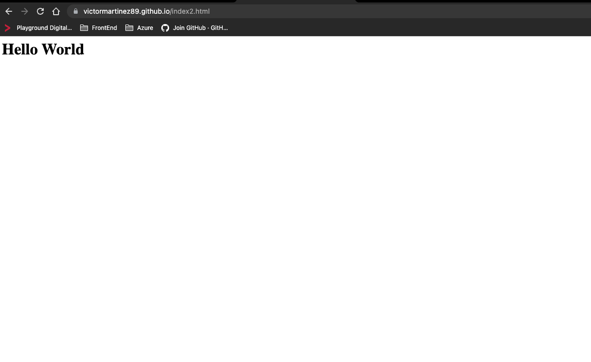

The following instructions relates the steps for publishing a Webpage on Github Pages Github
-
SignIn to Github with an existing account SignIn or create a new Github account SignUp
-
Add a new Repository to your GitHub Account. For this, locate the user menu on Top Right and select "Your Repositories" option, then click on New
-
The Create a New Repository page will require some information. It's advice to type the following text before the creationg of the Repository
- Repository name : Your username plus the github.io termination.
- Public : Your username plus the github.io termination.
- Create repository
-
Next to the Get Started section, you will click over the uploading an existing file link. Click over this option so we can start adding the new structure to our HTML page
 -
In a separete code editor, we will type the following html code which will contain the structure of our HTML page
- Open a terminal
- Type "nano index.html" This will open a code editor for the file index.html
- Type < h1> Hello World< /h1>
- Press Ctrl +X, enter, and drag the file into the Repository
Click on Commit changes and now are ready to open the proper repository from the browser
-
Now we are ready to open our new webpage. From a browser, type the following url "Youusername.github.io/index.html"
